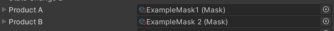

Walkthrough: Creating A Simple Scripted Proposal
To create a proposal, open up the game project in Unity.
- In the "Project" window, right-click on the window, then navigate to and select
Create → ScriptableObject → Proposal.
Note
The .asset file created from this action can be placed anywhere in the "Assets" folder, although proper file organisation is recommended.
- Select the proposal in the "Project" window. The inspector should show the newly created Proposal.
- Attached the desired NPC character (defined by a ProposerInfo asset)
Tip
Alternatively create your own NPC by creating a new ProposerInfo asset by right-clicking on the project window, then selecting Create → ScriptableObject → Proposer.
See article on the ProposerInfo ScriptableObject for details.
- Under the
Proposer Behaviourfield, select GDA.ProposerBehaviours.ScriptedProposerBehaviour
- Under the
Scripted Conversationsfield, add conversation assets with the appropriate keys/name. You can use the image below for reference.
Tip
You can create your own conversation assets by right-clicking on the project window, then selecting Create → ScriptableObject → Conversation.
See article on the Conversation ScriptableObject for details.
Note
For how to use the correct keys to work properly with different ProposerBehaviours, see article on the current ProposerBehaviours for details.
- Create a new Product by right-clicking on the project window, then selecting
Create → Product → Mask.
- Select the new mask product, and attach a product generator the
Product Generatorfield.
- The product should now be generated. In order to generate the product with different specifications, hit the
generateButton.
Tip
Details for Products can be filled in manually, but it is much easier to generate the details with a ProductGenerator first, then editing the details afterwards.
Repeat steps 6-8 to create another Product asset.
Attach the newly created products to the proposal.

Tip
You can attach the product by clicking on the circle then selecting the product, or by click-and-dragging the product from the "Project" window into the slot.
- Create a new UserGroup by right-clicking on the project window, then selecting
Create → ScriptableObjects → UserGroup.

- Select the new usergroup, and attach a UserArchetype to the
User Archetypefield.

- Choose the desired
Size Magnitude, then click on theRegenerate Assetbutton to populate the details of the user group.
Tip
Details for UserGroups can be filled in manually, but it is much easier to generate the details with a ProductGenerator first, then editing the details afterwards.
- Attach the newly created usergroup to the proposal.
- The remaining fields
State Change A/B,News A/Bcan be left blank. To learn how to use them, see articles on the Proposal and NewsItem ScriptableObjects respectively.
Including the Proposal in the Game
Now that we have a Proposal, we need to include it into the actual game.
- Select a ProposalSequence asset in the "Project" window, or create a new one.
Tip
You can create your own ProposalSequence assets by right-clicking on the project window, then selecting Create → ScriptableObject → ProposalSequence.
See article on the Conversation ProposalSequence for details.
- Click the "+" button to add a slot.
- Expand the new slot.
- Ensure
Is Generatedis unchecked and attach the Proposal to thePredefined Proposalfield
- Select the
GamePlayManagerin the scene hierarchy.
- Ensure the relevant ProposalSequence is in the
Campaign Sequencefield.
If it is not, then click on the "+" button to add a slot, then add the ProposalSequence to the new slot.